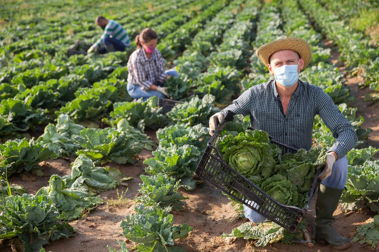

Produção no Campo

O Paraná é um dos maiores produtores agrícolas do Brasil, com destaque para grãos, leite, carnes e hortifrutigranjeiros. A integração entre campo e cidade é evidente na cadeia de distribuição, processamento e comercialização dos produtos, garantindo segurança alimentar e geração de renda.
A modernização no campo com o uso de tecnologias, como agricultura de precisão, biotecnologia e sistemas de irrigação inteligente, tem elevado os índices de produtividade de maneira sustentável.
Destaques na Produção Paranaense
- Soja, milho e trigo como principais cultivos;
- Avanços na agroindústria familiar e cooperativas;
- Exportações que movimentam a economia estadual.
Conexão com a Cidade
A produção agrícola abastece as cidades com alimentos frescos e de qualidade. Feiras locais, circuitos curtos de comercialização e o fortalecimento da agricultura urbana são estratégias que aproximam os dois mundos.